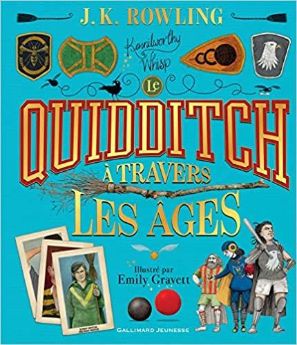

Le sport de la semaine : le Quidditch
Vous aimez les sports extrêmes qui vous permettent plus ou moins de tuer vos opposants, ou bien vous adorez poursuivre une sorte de cochonnet doré, ou encore votre rêve serait d'être scruté par des vieux mages comme Dumbledore ? Nous avons trouvé le sport fait pour vous à la LH : le Quidditch.
Les moldus mordus m'excuseront de rappeler les bases de ce sport mais il faut savoir que je méprise la communauté fan de Harry Potter donc je m'en fiche. Donc le Quidditch c'est un sport d'équipe à ballons sur balai volant. Les équipes, au nombre de deux, sont composés de sept joueurs.

Les trois poursuiveurs qui se passent le ballon "principal" appelé le "souafle". Leur but, c'est essentiellement de faire des passes ou d'intercepter le souafle pour arriver finalement aux buts et marquer. Un but rapporte dix points.
Les deux batteurs qui, comme leurs noms l'indiquent, sont équipés de BATTE et frappent des "cognards" qui sont grossièrement l'équivalent magique d'une boule de pétanque lancée par Didier entre deux pastis au club du village. Leur objectif est tout bonnement de DETRUIRE les adversaires, et aussi de défendre les coéquipiers. Pour information, un cognard reçu sur n'importe quelle partie du corps c'est directement une fracture. Alors imaginez sur des gosses en pleine puberté qui ont pas les os en place encore.
Après les deux sociopathes qui essayent de fracturer les gens, il y a le gardien qui doit arrêter les buts, et aussi éviter de ne pas se faire tuer car il est régulièrement la cible d'attaque. Vous remarquerez qu'il y a trois anneaux pour les buts. Est-ce que c'est particulièrement intéressant pour le sport ? Pas vraiment.
Et finalement, l'attrapeur, qui poursuit ce que j'ai appelé le cochonnet doré et ce qu'ils appellent eux "le vif d'or". Le cochonnet doré se déplace un peu partout sur le terrain et les deux attrapeurs essayent de le saisir aussi vite que possible. Attraper le cochonnet doré rapporte cents points à l'équipe de l'attrapeur. Et oui, il faut bien faire dix DIX buts pour compenser les points rapportés par le cochonnet doré. Ce qui scénaristiquement s'est expliqué pour centrer le match sur Harry Potter mais ce qui sportivement est proche du néant.
Je ne savais pas que J.K. Rowling avait écrit l'histoire du Quidditch. En même temps, excepté revenir sur ce qu'elle a écrit et être transphobe, elle fait pas grand chose. Le Quidditch est apparu dans les marais de Queerditch (slay :P), d'où le nom du sport. L'ajout du cochonnet doré a été plus tardive ! Une sorcière dont tout le monde se fiche excepté les Potterheads avait lâché sans faire exprès un "vivet doré" qui est un oiseau "sphérique, très rapide et très mobile". Si sphérique est un adjectif étonnant pour un oiseau, j'ajouterais qu'on peut en vouloir à cette personne d'avoir introduit une mécanique assez peu intéressante à ce jeu prometteur.
Quand est-ce que ça se termine une partie ? Souvent au moment où le vif d'or est attrapé, parfois par accord mutuel des équipes. Certaines parties auraient duré plusieurs mois dans le lore de Harry Potter. Personnellement, en tant qu'arbitre, j'aurais arrêté au bout d'une heure parce que c'est un sport chiant comme la mort. Mais ça, c'était sans compter l'obsession dingue pour ce sport dans le monde magique. Dans notre monde, il y a de l'orage ou de la pluie énervée, un match de foot est arrêté. Dans le monde des sorciers, il y a des sortes de suceurs d'âme et des éclairs au-dessus d'un stade d'un sport où les gens vont en hauteur, il continue le match même si c'est un match au sein de l'école qui n'a aucune importance. (cf. le troisième Harry Potter).
Ils n'existent pas plus gros forceurs que les sorciers avec ce sport. Enfin, c'est ce que je pensais avant que la fanbase Harry Potter décide d'importer dans le vrai monde ce sport nul. Ce que je comprends parfaitement, quand j'étais petit, je trouvais ça marrant et en plus on pouvait voler. Après, c'était quand j'avais cinq ans. Tout ce qu'il peut y avoir d'intéressant à regarder (les joueurs qui se font détruire à coup de cognard) est globalement absent. Puis, il y a quand même un énorme frein pour importer un jeu de sport collectif sur balai volant. Vous l'avez ? Bravo ! Les vrais balais ne volent pas :\. Enfin, ça n'a pas arrêté la fanbase américaine. Sûrement, le mindset "fake it 'til you make it".
C'est finalement le coup de génie de l'importation de ce sport. Voir des brochettes d'américains se trémousser avec un balai au derrière en s'imaginant affronter le mal absolu après est mordant. Le ridicule ne tue pas, c'est certain. Le petit plus étant d'avoir traduit le cochonnet doré par un homme qui court un peu partout sur le terrain. Cette scène de course poursuite - entre des adultes consentants qui refont les jeux d'entraînement de cours de Judo du jeudi soir à 18h pour attraper une balle de Tennis qui pendouille - est particulièrement divertissante.
Une fois le match terminé, l'écran noir de mon ordinateur n'a fait que réfléter mon visage éteint. La joie que j'avais ressenti n'avait été que pure moquerie, ou taquinerie mais quand le Quidditch s'est terminé, j'ai ressenti un vide. A voir des sourires si profonds sur le visage de ceux qui s'affrontent balai entre les jambes, j'en viens à me demander : est-ce que ce n'est pas ça le bonheur ? Être heureux quand un aigri asocial se moque de vous.